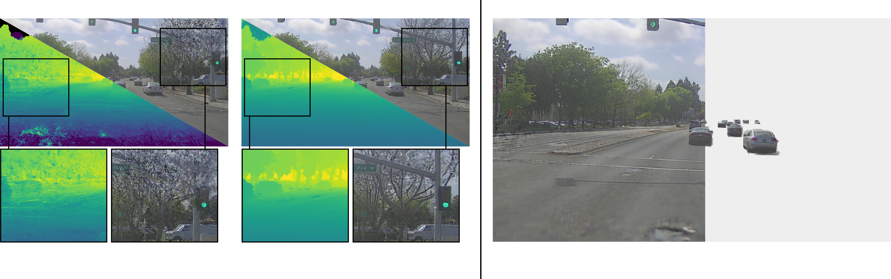

Dynamic Driving Scene Reconstruction and Decomposition.
Compared to state-of-the-art methods like StreetGS (left), DrivingVoxels (center) eliminates floating artifacts and geometric degradation—achieving superior accuracy ($\mathbf{\text{CD}\,=\,0.06}$, $\mathbf{\text{F1}\,=\,59.9\%}$) and a $\mathbf{3.3\times}$ speedup (30 vs. 102 min)—while cleanly decoupling static backgrounds from dynamic actors via compositional multi-octree formulation (right).